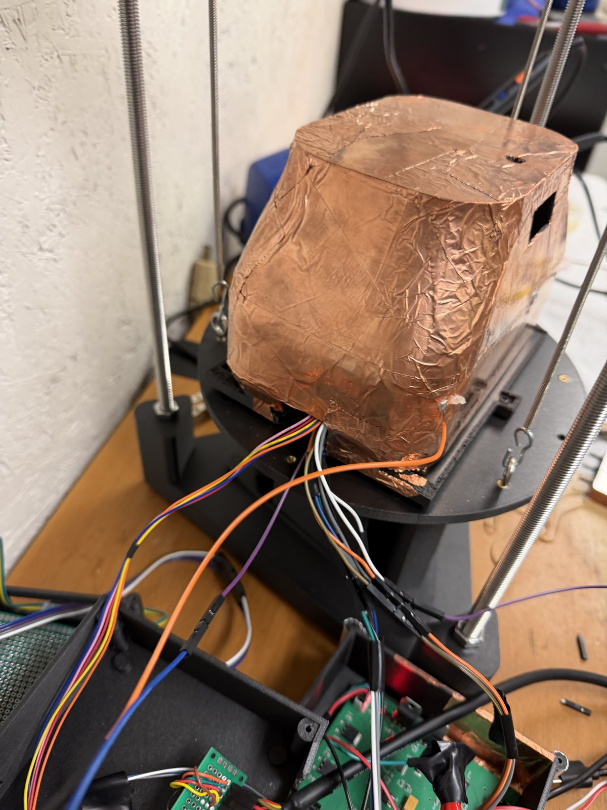
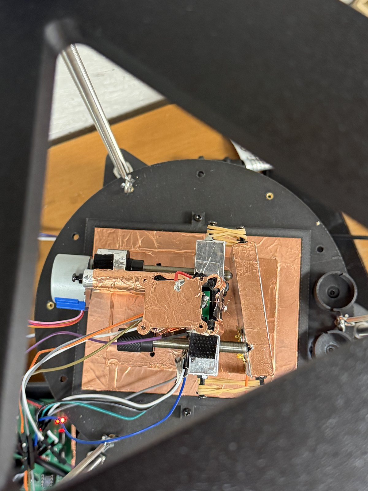
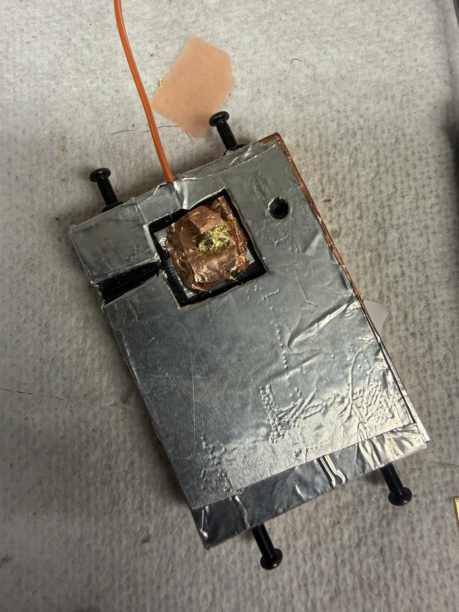
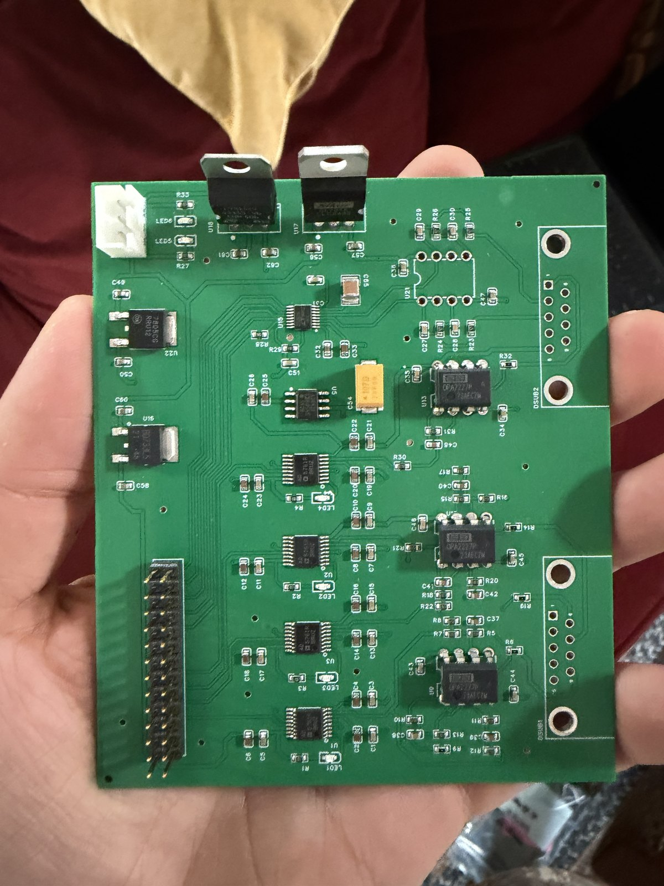
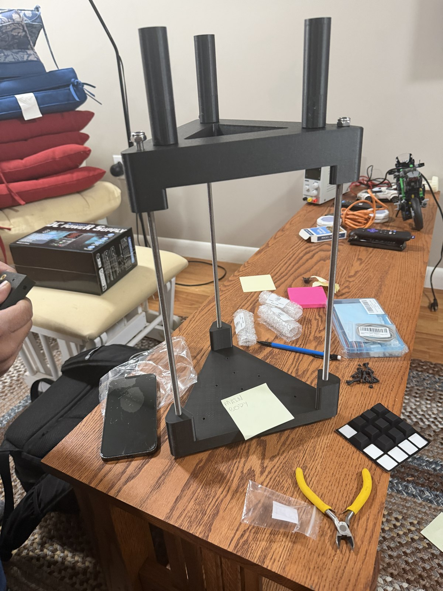
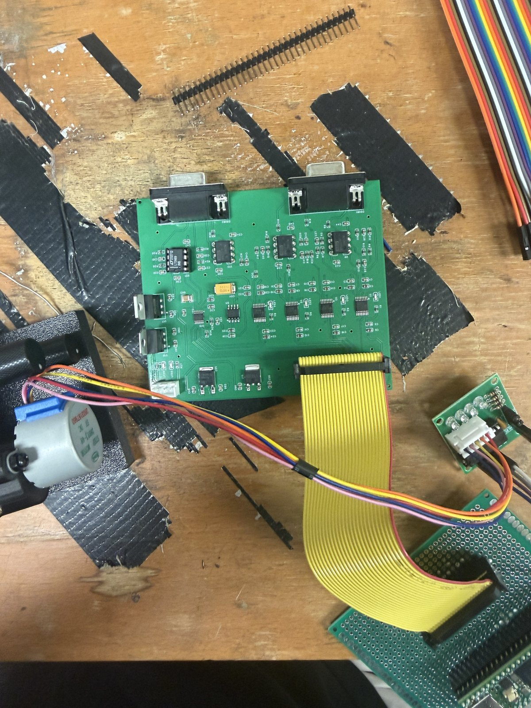
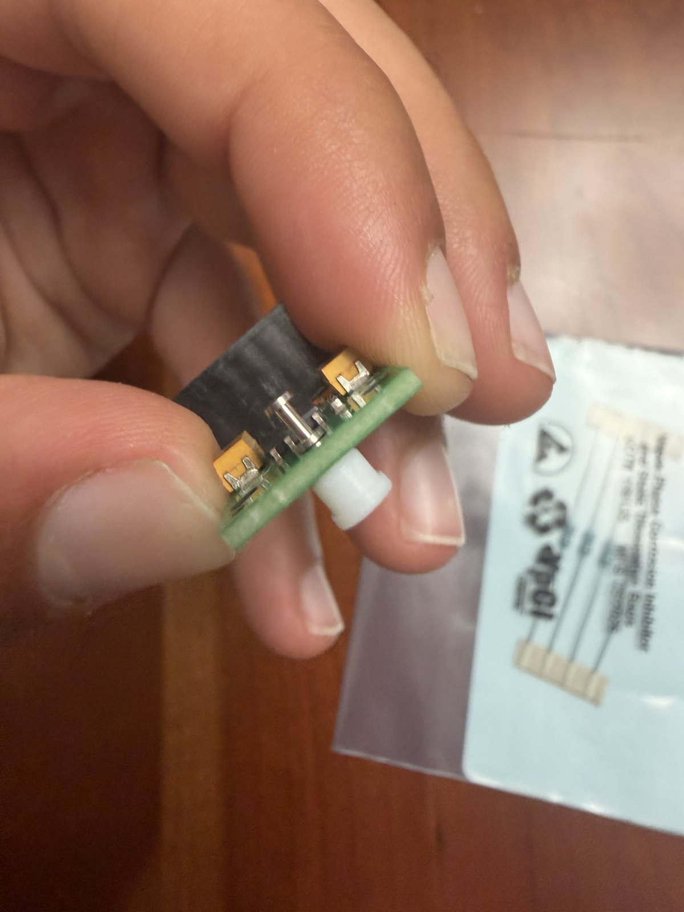
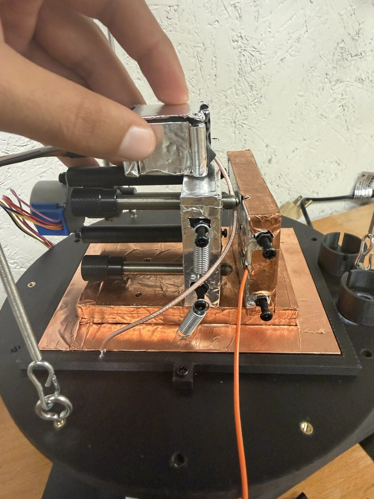
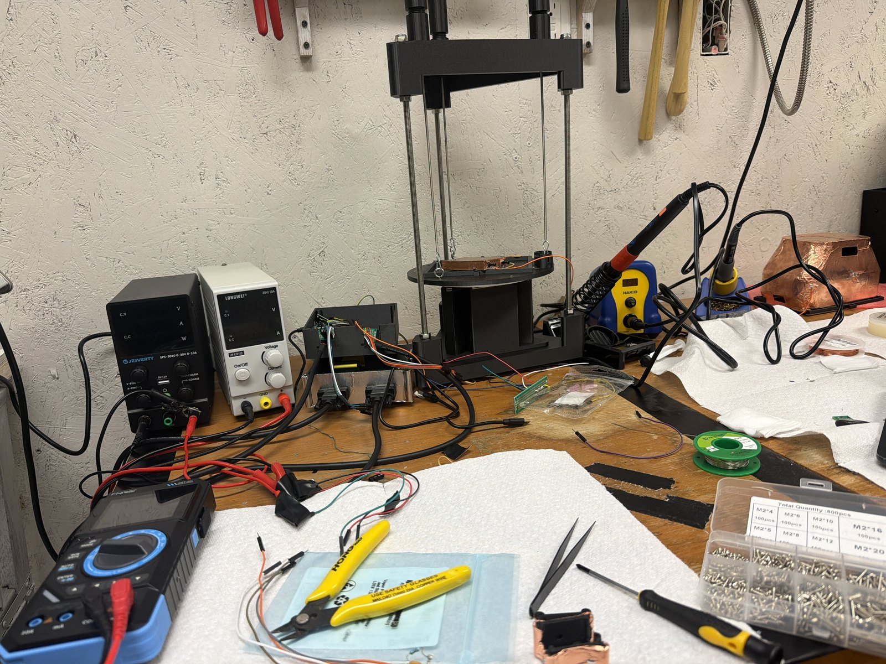

<title>We Are STMing</title>
<link rel="preconnect" href="https://fonts.googleapis.com">
<link rel="preconnect" href="https://fonts.gstatic.com" crossorigin>
<link rel="stylesheet" href="https://fonts.googleapis.com/css2?family=Newsreader:opsz,wght@6..72,300;6..72,400;6..72,500;6..72,600&family=IBM+Plex+Mono:wght@400;500;600&family=IBM+Plex+Sans:wght@400;450;500;600&display=swap">
<style>
:root{
  --paper:#f4f6f8; --panel:#ffffff; --sunk:#edf0f3;
  --ink:#0e1319; --ink-2:#4b5563; --ink-3:#7d8794;
  --rule:#dde2e8; --rule-2:#e9edf1;
  --gold:#8a6a12; --gold-mark:#c9a227; --gold-soft:#f7f0d9;
  --s1:#2a78d6; --s2:#eb6834; --s3:#1baf7a;
  --good:#1b7f4b; --crit:#b93b2f;
  --band:rgba(14,19,25,.07); --band-line:rgba(14,19,25,.24);
  --shadow:0 1px 2px rgba(14,19,25,.05), 0 12px 30px -20px rgba(14,19,25,.35);
  --sans:"IBM Plex Sans", ui-sans-serif, system-ui, -apple-system, sans-serif;
  --mono:"IBM Plex Mono", ui-monospace, SFMono-Regular, Menlo, monospace;
  --serif:"Newsreader", ui-serif, Georgia, "Times New Roman", serif;
}
@media (prefers-color-scheme: dark){
  :root:where(:not([data-theme="light"])){
    --paper:#0c1014; --panel:#141a20; --sunk:#1b232a;
    --ink:#edf1f5; --ink-2:#a3aeba; --ink-3:#6f7a86;
    --rule:#252e37; --rule-2:#1d252c;
    --gold:#d4af37; --gold-mark:#d4af37; --gold-soft:#2a2414;
    --s1:#3987e5; --s2:#d95926; --s3:#199e70;
    --good:#3aa96e; --crit:#e06b5e;
    --band:rgba(237,241,245,.08); --band-line:rgba(237,241,245,.26);
    --shadow:0 1px 2px rgba(0,0,0,.5), 0 12px 30px -20px rgba(0,0,0,.9);
  }
}
:root[data-theme="dark"]{
  --paper:#0c1014; --panel:#141a20; --sunk:#1b232a;
  --ink:#edf1f5; --ink-2:#a3aeba; --ink-3:#6f7a86;
  --rule:#252e37; --rule-2:#1d252c;
  --gold:#d4af37; --gold-mark:#d4af37; --gold-soft:#2a2414;
  --s1:#3987e5; --s2:#d95926; --s3:#199e70;
  --good:#3aa96e; --crit:#e06b5e;
  --band:rgba(237,241,245,.08); --band-line:rgba(237,241,245,.26);
  --shadow:0 1px 2px rgba(0,0,0,.5), 0 12px 30px -20px rgba(0,0,0,.9);
}

*{box-sizing:border-box}
body{margin:0; background:var(--paper); color:var(--ink);
  font-family:var(--sans); font-size:17px; line-height:1.62;
  -webkit-font-smoothing:antialiased}
.wrap{max-width:1000px; margin:0 auto; padding-inline:22px; padding-block:0}
.narrow{max-width:68ch}
p{margin:0 0 1em}
p:last-child{margin-bottom:0}
strong{font-weight:600}
em{font-style:italic}
code{font-family:var(--mono); font-size:.86em; background:var(--sunk);
  padding:1px 5px; border-radius:3px}
a{color:var(--gold); text-underline-offset:2px}
:focus-visible{outline:2px solid var(--gold); outline-offset:3px; border-radius:2px}
.num{font-family:var(--mono); font-variant-numeric:tabular-nums}

h1{font-family:var(--serif); font-variation-settings:"opsz" 60;
  font-weight:500; font-size:clamp(44px,8.5vw,80px); line-height:1.0;
  letter-spacing:-.022em; margin:0 0 20px; text-wrap:balance}
h2{font-family:var(--serif); font-variation-settings:"opsz" 40;
  font-weight:500; font-size:clamp(27px,4.4vw,40px); line-height:1.12;
  letter-spacing:-.014em; margin:0 0 12px; text-wrap:balance}
h3{font-family:var(--sans); font-weight:600; font-size:17.5px; line-height:1.35;
  margin:0 0 8px}
.eyebrow{font-family:var(--mono); font-size:11.5px; font-weight:500;
  letter-spacing:.17em; text-transform:uppercase; color:var(--gold); margin:0 0 16px}
.q{font-family:var(--mono); font-size:11.5px; font-weight:600; letter-spacing:.14em;
  text-transform:uppercase; color:var(--ink-3); margin:0 0 10px}
.deck{font-size:clamp(18px,2.4vw,21px); line-height:1.52; color:var(--ink-2);
  max-width:60ch}
.lede{font-size:18px; line-height:1.55; color:var(--ink-2); max-width:66ch}

/* hero */
header{background:var(--panel); border-bottom:1px solid var(--rule)}
header .wrap{padding-block:clamp(48px,9vw,88px) 0}
.rule-gold{width:60px; height:3px; background:var(--gold-mark); border-radius:2px; margin:0 0 22px}
.meta{display:flex; flex-wrap:wrap; gap:8px 24px; margin-top:26px;
  font-family:var(--mono); font-size:12px; color:var(--ink-3)}

.stats{display:grid; grid-template-columns:repeat(auto-fit,minmax(196px,1fr));
  gap:1px; background:var(--rule); border-top:1px solid var(--rule);
  margin-top:40px}
.stat{background:var(--panel); padding:22px 20px 20px}
.stat .k{font-family:var(--mono); font-size:10.5px; letter-spacing:.12em;
  text-transform:uppercase; color:var(--ink-3); margin-bottom:10px}
.stat .v{font-family:var(--mono); font-variant-numeric:tabular-nums;
  font-size:30px; font-weight:600; line-height:1; letter-spacing:-.022em;
  color:var(--gold)}
.stat .v small{font-size:15px; font-weight:400; color:var(--ink-2); letter-spacing:0}
.stat .n{font-size:13px; line-height:1.45; color:var(--ink-3); margin-top:9px}

/* photographs */
.shots{display:grid; grid-template-columns:repeat(auto-fit,minmax(228px,1fr));
  gap:14px; margin-top:30px}
.shot{margin:0; background:var(--panel); border:1px solid var(--rule); border-radius:6px;
  overflow:hidden; box-shadow:var(--shadow)}
.shot img{display:block; width:100%; aspect-ratio:3/4; object-fit:cover;
  background:var(--sunk)}
.shot figcaption{padding:13px 15px 15px; font-size:13.5px; line-height:1.48; max-width:none}
.arc{display:grid; grid-template-columns:repeat(auto-fit,minmax(134px,1fr));
  gap:10px; margin-top:24px}
.arc figure{margin:0; border-radius:5px}
.arc img{display:block; width:100%; aspect-ratio:1; object-fit:cover; background:var(--sunk)}
.arc .when{font-family:var(--mono); font-size:10.5px; font-weight:600; letter-spacing:.09em;
  color:var(--gold); padding:10px 11px 0}
.arc .what{font-size:12.5px; line-height:1.4; color:var(--ink-2); padding:2px 11px 12px;
  margin:0}
.shotnote{margin-top:22px; font-size:13.5px; color:var(--ink-3); max-width:74ch}


/* sections */
section{padding-block:clamp(48px,6.5vw,80px); border-bottom:1px solid var(--rule)}
section:last-of-type{border-bottom:none}

/* answer callout */
.answer{background:var(--gold-soft); border-left:3px solid var(--gold-mark);
  border-radius:0 6px 6px 0; padding:18px 22px; margin:22px 0 0; max-width:70ch}
.answer p{font-size:17.5px; line-height:1.5; color:var(--ink-2)}
.answer b{color:var(--ink)}

/* figures */
figure{margin:32px 0 0; background:var(--panel); border:1px solid var(--rule);
  border-radius:6px; box-shadow:var(--shadow); overflow:hidden}
.fig-head{padding:22px 24px 0}
.figno{font-family:var(--mono); font-size:10.5px; font-weight:600; letter-spacing:.13em;
  text-transform:uppercase; color:var(--ink-3); margin-bottom:8px}
.fig-head h3{margin-bottom:6px; font-size:19px}
.fig-read{font-size:14.5px; line-height:1.5; color:var(--ink-2); margin:0; max-width:74ch}
.plot{position:relative; padding:16px 14px 6px}
.plot svg{display:block; width:100%; height:auto; overflow:visible}
.legend{display:flex; flex-wrap:wrap; gap:6px 22px; padding:6px 24px 0;
  font-family:var(--mono); font-size:12px; color:var(--ink-2)}
.legend i{display:inline-block; width:18px; height:3px; border-radius:2px;
  margin-right:7px; vertical-align:middle}
.legend i.dash{background:none; border-top:2px dashed var(--ink-3); height:0}
.legend i.dot{width:9px; height:9px; border-radius:50%}
figcaption{padding:14px 24px 22px; font-size:14.5px; line-height:1.55;
  color:var(--ink-2); max-width:78ch}
figcaption b{color:var(--ink); font-weight:600}

.tip{position:absolute; pointer-events:none; opacity:0; transition:opacity .09s;
  background:var(--ink); color:var(--paper); border-radius:4px; padding:7px 10px;
  font-family:var(--mono); font-size:11.5px; line-height:1.45; white-space:nowrap;
  z-index:20; transform:translate(-50%,-115%); box-shadow:0 4px 14px rgba(0,0,0,.28)}

/* elimination scorecard */
.score{margin-top:30px; background:var(--panel); border:1px solid var(--rule);
  border-radius:6px; overflow:hidden; box-shadow:var(--shadow)}
.srow{display:grid; grid-template-columns:1fr auto; gap:5px 18px; align-items:baseline;
  padding:15px 24px; border-bottom:1px solid var(--rule-2)}
.srow:last-child{border-bottom:none}
.srow .what{font-weight:500; font-size:16px}
.srow .verdict{font-family:var(--mono); font-size:10.5px; font-weight:600;
  letter-spacing:.1em; text-transform:uppercase; white-space:nowrap; color:var(--good)}
.srow.open .verdict{color:var(--crit)}
.srow .ev{grid-column:1/-1; font-family:var(--mono); font-size:12.5px; color:var(--ink-3)}
.srow.open{background:color-mix(in srgb, var(--crit) 5%, var(--panel))}

/* method cards */
.methods{display:grid; grid-template-columns:repeat(auto-fit,minmax(268px,1fr));
  gap:16px; margin-top:30px}
.m{background:var(--panel); border:1px solid var(--rule); border-radius:6px;
  padding:22px 22px 20px; box-shadow:var(--shadow)}
.m h3{margin-bottom:9px}
.m p{font-size:15px; line-height:1.55; color:var(--ink-2)}
.m .tag{font-family:var(--mono); font-size:10.5px; letter-spacing:.11em;
  text-transform:uppercase; color:var(--gold); margin-bottom:11px}

/* next */
.next{margin-top:28px; display:grid; gap:0; border:1px solid var(--rule);
  border-radius:6px; background:var(--panel); box-shadow:var(--shadow); overflow:hidden}
.nrow{padding:17px 24px; border-bottom:1px solid var(--rule-2)}
.nrow:last-child{border-bottom:none}
.nrow h3{margin-bottom:5px}
.nrow p{font-size:15px; color:var(--ink-2); margin:0}

.maps{display:grid; grid-template-columns:repeat(auto-fit,minmax(210px,1fr)); gap:14px;
  padding:16px 24px 4px}
.map{display:flex; flex-direction:column; gap:8px}
.map svg{display:block; width:100%; height:auto; border-radius:3px}
.map .cap{font-family:var(--mono); font-size:11px; letter-spacing:.08em; text-transform:uppercase;
  color:var(--ink-3); text-align:center}
.map .cap b{display:block; font-size:12.5px; letter-spacing:.06em; color:var(--ink); margin-bottom:3px}
.scalebar{display:flex; align-items:center; gap:10px; padding:10px 24px 0;
  font-family:var(--mono); font-size:11px; color:var(--ink-3)}
.scalebar .grad{flex:1; max-width:220px; height:10px; border-radius:2px;
  background:linear-gradient(to right,#1f5fa8,#9aa0a6,#b8402f)}
.tw{overflow-x:auto; padding:0 24px 22px}
table{border-collapse:collapse; font-family:var(--mono);
  font-variant-numeric:tabular-nums; font-size:12.5px; width:100%; min-width:320px}
th,td{text-align:right; padding:6px 10px; border-bottom:1px solid var(--rule-2); white-space:nowrap}
th:first-child,td:first-child{text-align:left}
thead th{color:var(--ink-3); font-weight:500; border-bottom:1px solid var(--rule)}
details{border-top:1px solid var(--rule-2)}
summary{cursor:pointer; list-style:none; padding:12px 24px;
  font-family:var(--mono); font-size:11.5px; letter-spacing:.1em;
  text-transform:uppercase; color:var(--ink-3)}
summary::-webkit-details-marker{display:none}
summary::before{content:"+ "; font-weight:600}
details[open] summary::before{content:"- "}
summary:hover{color:var(--gold)}

footer{padding-block:44px 64px; color:var(--ink-3); font-size:14px; line-height:1.6}
footer .wrap{max-width:70ch}
footer code{font-size:12.5px; color:var(--ink-2)}

@media (max-width:560px){
  body{font-size:16px}
  .plot{padding:10px 4px 2px}
  figcaption,.fig-head,.legend,summary,.tw{padding-left:16px; padding-right:16px}
  .srow,.nrow{padding-left:16px; padding-right:16px}
}
@media (prefers-reduced-motion:reduce){*{transition:none!important}}
</style>

<header>
  <div class="wrap">
    <div class="rule-gold"></div>
    <p class="eyebrow">Instrument build &middot; 2026</p>
    <h1>We Are STMing</h1>
    <p class="deck">Two people with no programming background set out to build a scanning
      tunnelling microscope &mdash; a machine that reads a surface by measuring a current of about
      one nanoamp flowing across a gap a few atoms wide. This is what it can measurably do, and how
      we found out.</p>
    <div class="meta">
      <span>Jacob Katz &amp; Nuh</span>
      <span>Building since July 2026</span>
      <span>23 session logs</span>
      <span>Every raw file and analysis committed</span>
    </div>

    <div class="stats">
      <div class="stat">
        <div class="k">Amplifier input current</div>
        <div class="v">~4<small> pA</small></div>
        <div class="n">On a board we built. 250&times; inside the limit we set ourselves</div>
      </div>
      <div class="stat">
        <div class="k">Calibration vs theory</div>
        <div class="v">0.13<small> &sigma;</small></div>
        <div class="n">53 readings. Measured gain agrees with the predicted value</div>
      </div>
      <div class="stat">
        <div class="k">Junction resistance</div>
        <div class="v">16&ndash;59<small> M&#8486;</small></div>
        <div class="n">The range quantum tunnelling occupies</div>
      </div>
      <div class="stat">
        <div class="k">Electronics noise floor</div>
        <div class="v">8&ndash;14</div>
        <div class="n">ADC counts, flat white across the whole band</div>
      </div>
    </div>
  </div>
</header>

<main>

<section id="built">
  <div class="wrap">
    <p class="q">The hardware</p>
    <h2>Every part of this was designed, ordered, assembled and instrumented by two people
      in eight weeks</h2>
    <p class="lede">There was no kit. The circuit boards were laid out and sent to a fabricator,
      the frame and scan head were printed, and the analog chain &mdash; four 16-bit
      digital-to-analog converters, a 16-bit converter reading back, and a
      100&nbsp;M&#8486; transimpedance amplifier &mdash; was built up and characterised one
      stage at a time. Everything measured on this page was measured on the instrument in
      these photographs.</p>

    <div class="shots">
      <figure class="shot">
        
        <figcaption><b>The instrument, shielded and suspended.</b> The scan head sits inside a
          copper Faraday enclosure, hanging on a three-rod suspension that isolates it from the
          building. The current it has to read is about one billionth of an amp &mdash; a person
          standing a metre away injects more than that.</figcaption>
      </figure>
      <figure class="shot">
        
        <figcaption><b>Inside, from above.</b> The scan head on its copper ground plane. <b>The
          small copper box in the middle is the amplifier</b> &mdash; it sits as close to the tip
          as it physically can, because every extra centimetre of wire before the first gain stage
          is picked-up noise that can never be removed later.</figcaption>
      </figure>
      <figure class="shot">
        
        <figcaption><b>The sample.</b> Gold leaf about 100&nbsp;nm thick, in a window cut through
          the plate's tape facing, with the bias wire entering at the top. Gold is used because it
          does not grow an oxide &mdash; the surface a tip meets is the surface that was laid
          down.</figcaption>
      </figure>
    </div>

    <div class="arc">
      <figure>
        
        <p class="when">25 JUL</p>
        <p class="what">Controller board back from the fabricator</p>
      </figure>
      <figure>
        
        <p class="when">26 JUL</p>
        <p class="what">Printed frame and suspension standing up</p>
      </figure>
      <figure>
        
        <p class="when">7 AUG</p>
        <p class="what">First full electronics hookup</p>
      </figure>
      <figure>
        
        <p class="when">19 AUG</p>
        <p class="what">The 100&nbsp;M&#8486; amplifier board</p>
      </figure>
      <figure>
        
        <p class="when">24 AUG</p>
        <p class="what">Scan head onto the copper ground plane</p>
      </figure>
      <figure>
        
        <p class="when">15 SEP</p>
        <p class="what">Set up for the powered runs on this page</p>
      </figure>
    </div>

    <p class="shotnote">Photographs are our own hardware, taken at our bench. The full set, with a
      note on which captions are confirmed and which are a reading of the frame, is in
      <code>Images/ours/README.md</code>.</p>
  </div>
</section>

<section id="chain">
  <div class="wrap">
    <p class="q">Question one</p>
    <h2>Can a homemade amplifier really measure a nanoamp?</h2>
    <p class="lede">A tunnelling current is around one billionth of an amp. To read it we built a
      transimpedance amplifier with a <strong>100 M&#8486;</strong> feedback resistor, which turns
      1 nA into 0.1 V. At that gain, the amplifier's own input current and any stray leakage path
      have to be smaller than the signal &mdash; by a lot.</p>

    <div class="answer">
      <p><b>Yes, and we proved it against a known standard.</b> We put a precision 100 M&#8486;
        resistor where the tip would be, swept the voltage across it, and compared what the
        instrument reported against what Ohm's law says it should. <b>The measured gain came out at
        &minus;3,204.8 &plusmn; 36.5 counts per volt against &minus;3,200 predicted</b> &mdash; an
        agreement of <b>0.13 standard errors</b>, with <b>R&sup2; = 0.993</b> over 53 readings.</p>
    </div>

    <figure>
      <div class="fig-head">
        <div class="figno">Figure 1 &middot; end-to-end calibration</div>
        <h3>Every reading falls on the line theory predicts</h3>
        <p class="fig-read">Each dot is one raw reading. The dashed line is not fitted to the data
          &mdash; it is what Ohm's law through a 100 M&#8486; resistor <em>requires</em>, worked out
          before the measurement.</p>
      </div>
      <div class="legend">
        <span><i class="dot" style="background:var(--s1)"></i>Individual reading (53)</span>
        <span><i class="dash"></i>Predicted: &minus;3,200 counts per volt</span>
      </div>
      <div class="plot" id="fig-cal"></div>
      <figcaption>This one chart is what makes every later number believable. It establishes the
        conversion &mdash; <b>320.5 counts per nanoamp</b> &mdash; and it settles the sign, which
        matters because a tunnelling current that drives the reading the unexpected way would make
        an automatic approach drive the tip into the sample. <b>The amplifier's own input current
        measures about 4 pA</b>, roughly 250 times smaller than the tunnelling signal it has to
        resolve.</figcaption>
      <details>
        <summary>All 53 readings</summary>
        <div class="tw"><table id="tbl-cal"></table></div>
      </details>
    </figure>
  </div>
</section>

<section id="junction">
  <div class="wrap">
    <p class="q">Question two</p>
    <h2>Is there really a quantum junction at the tip?</h2>
    <p class="lede">Getting <em>a</em> current is easy &mdash; crash the tip into the sample and you
      get plenty. The hard part is showing that what you have is a <strong>barrier</strong>: two
      conductors close enough for electrons to cross a gap, rather than simply touching.</p>

    <div class="answer">
      <p><b>Yes, and it has the shape a barrier must have.</b> The current rose from
        <b>0.85 nA at 0.05 V to 31.7 nA at 0.5 V</b> &mdash; about <b>four times faster</b> than
        Ohm's law. It was <b>symmetric in both bias polarities</b> to within 10%, and its effective
        resistance fell from 59 M&#8486; to 16 M&#8486; as the voltage rose. A metal-to-metal
        contact is a straight line. An open circuit gives nothing.</p>
    </div>

    <figure>
      <div class="fig-head">
        <div class="figno">Figure 2 &middot; current against voltage</div>
        <h3>The junction accelerates where a resistor would not</h3>
        <p class="fig-read">Read the gap between the two lines. A plain resistor of the same
          low-voltage value would follow the dashed line.</p>
      </div>
      <div class="legend">
        <span><i style="background:var(--s1)"></i>Measured</span>
        <span><i class="dash"></i>A plain 59 M&#8486; resistor</span>
      </div>
      <div class="plot" id="fig-iv"></div>
      <figcaption>Taken as <b>eight rounds with the polarities interleaved</b>, so that slow drift
        could not manufacture the slope. <b>Independently confirmed by a bias-flip test on two
        separate nights</b>: reverse the voltage on the sample and the reading reverses sign at
        about the same magnitude. Noise cannot do that, and it is the cheapest honest test this
        instrument has &mdash; it rejected two false contacts and confirmed the real one.
        <b>Leakage was separately excluded</b>: with the tip retracted and the bias swept
        &plusmn;2 V, every reading stayed inside 0.06 nA, which is over 8 G&#8486;.</figcaption>
      <details>
        <summary>The numbers</summary>
        <div class="tw"><table id="tbl-iv"></table></div>
      </details>
    </figure>
  </div>
</section>

<section id="limit">
  <div class="wrap">
    <p class="q">Question three</p>
    <h2>So what stops it producing an image?</h2>
    <p class="lede">We have a calibrated chain and a real junction, and we do not yet have a
      picture. <strong>Finding out precisely why is the substance of this project</strong> &mdash;
      and it is the part that transfers to any instrument, not just this one.</p>

    <p class="lede" style="margin-top:14px">We treated it as an elimination campaign: list every
      candidate that could blur a measurement, and <strong>kill each one with a number</strong>
      rather than an argument.</p>

    <div class="score">
      <div class="srow"><span class="what">Amplifier and electronics noise</span>
        <span class="verdict">Eliminated</span>
        <span class="ev">Flat white noise, 8&ndash;14 counts across the whole band &mdash; Figure 3</span></div>
      <div class="srow"><span class="what">Leakage through the tip lead or holder</span>
        <span class="verdict">Eliminated</span>
        <span class="ev">Under 0.06 nA from &minus;2 V to +2 V. Over 8 G&#8486;</span></div>
      <div class="srow"><span class="what">Mains hum at 60 or 120 Hz</span>
        <span class="verdict">Eliminated</span>
        <span class="ev">No peak at either frequency with a junction present</span></div>
      <div class="srow"><span class="what">The feedback loop mistracking</span>
        <span class="verdict">Eliminated</span>
        <span class="ev">Holds current to ~0.06 of a decade at 2,000 pixels/s; 5, 15 and 250 corrections per pixel all agree</span></div>
      <div class="srow"><span class="what">Noise in the digitiser read path</span>
        <span class="verdict">Fixed</span>
        <span class="ev">Switched to the firmware's averaged read: 188 counts down to 46, for the same 0.24 ms</span></div>
      <div class="srow"><span class="what">Scanning a window smaller than an atom</span>
        <span class="verdict">Fixed</span>
        <span class="ev">Was &plusmn;0.6 nm. Widened forty-fold once the real scale was measured</span></div>
      <div class="srow"><span class="what">The operator sitting at the bench</span>
        <span class="verdict">Eliminated</span>
        <span class="ev">Under 1% of the noise, and in the wrong direction. A hand at 5 cm is worth 370 pA &mdash; hands off, sitting is fine</span></div>
      <div class="srow open"><span class="what">Mechanical vibration below 30 Hz</span>
        <span class="verdict">This is the limit</span>
        <span class="ev">353 counts at 5 Hz, present only when a junction exists &mdash; Figure 3</span></div>
    </div>

    <figure>
      <div class="fig-head">
        <div class="figno">Figure 3 &middot; noise spectroscopy</div>
        <h3>The measurement that located the limit</h3>
        <p class="fig-read">Both axes logarithmic. The flat green trace is the electronics with no
          junction. Everything the junction adds piles up on the left, below 30 Hz.</p>
      </div>
      <div class="legend">
        <span><i style="background:var(--s3)"></i>No junction &mdash; electronics alone</span>
        <span><i style="background:var(--s2)"></i>Junction, bias off</span>
        <span><i style="background:var(--s1)"></i>Junction, bias on</span>
      </div>
      <div class="plot" id="fig-spec"></div>
      <figcaption>With no junction the chain is <b>flat white noise at 8&ndash;14 counts</b> from
        2 Hz to 1.2 kHz &mdash; the signature of a clean measurement path. Bring a junction into
        existence and <b>353 counts appear at 5 Hz</b>, falling away by 60 Hz. <b>There is no peak
        at 60 or 120 Hz</b>, so it is not mains pickup, and nothing at 1.2 kHz, so it is not the
        digital side. Noise that lives between 5 and 20 Hz and exists only when something is nearly
        touching is <b>mechanical</b>.
        <br><br><b>That single chart redirected the whole project</b> &mdash; away from the
        electronics, which we had been improving, and toward the mechanics, which we had not.</figcaption>
      <details>
        <summary>The numbers</summary>
        <div class="tw"><table id="tbl-spec"></table></div>
      </details>
    </figure>
  </div>
</section>

<section id="predict">
  <div class="wrap">
    <p class="q">Question four</p>
    <h2>Can we predict a failure before measuring it?</h2>
    <p class="lede">The most recent session produced a puzzle: instead of the current rising
      smoothly as the tip approached, it <strong>jumped</strong> &mdash; from under 1,000 counts to
      over 10,000 within 25 to 75 steps of the height command. Then Jacob mentioned something in
      passing. The fresh gold leaf on the sample <strong>moved when he blew on it</strong>. The
      previous sheet had not.</p>

    <div class="answer">
      <p><b>That observation turned out to contain its own calibration.</b> Gold leaf is about
        100 nm thick, so it weighs <b>0.019 pascals</b>. The sample carries the bias voltage and the
        tip sits at virtual earth, so the full bias appears across the gap and <b>pulls the leaf
        toward the tip</b>. At a one-micron gap that pull is <b>58 times the leaf's own weight</b>.
        At 100 nm it is <b>5,800 times</b>. And because it grows as <b>1&nbsp;/&nbsp;gap&sup2;</b>,
        it runs away &mdash; closer means stronger means closer still. <b>That is a pull-in
        instability, and a pull-in instability is exactly a snap.</b></p>
    </div>

    <figure>
      <div class="fig-head">
        <div class="figno">Figure 4 &middot; electrostatic pull-in</div>
        <h3>Why an unattached sample cannot be imaged</h3>
        <p class="fig-read">Both axes logarithmic. Where the blue line crosses above the grey one,
          the electric field is winning against gravity and the foil lifts.</p>
      </div>
      <div class="legend">
        <span><i style="background:var(--s1)"></i>Electrostatic pull at 0.5 V bias</span>
        <span><i style="background:var(--ink-3)"></i>Weight of the gold leaf itself</span>
        <span><i class="dash"></i>A gentle breath, for scale</span>
      </div>
      <div class="plot" id="fig-pull"></div>
      <figcaption><b>The blow test sets the scale, which is what makes it such a useful
        observation.</b> A gentle breath carries roughly 0.6 to 15 pascals. A sheet that visibly
        moves under a breath is responding to about a pascal &mdash; <b>the same order as the
        electrostatic pull at a one-micron gap</b>. Blowing on it accidentally measured the very
        thing that matters.
        <br><br>The prediction also accounts for the rest of that night: the gap wandering while the
        motor was held still, single motor steps sometimes moving the surface enormously and
        sometimes not at all, and <b>retract steps that brought the sample into contact</b> &mdash;
        which a rigid stage cannot do, and a floating membrane can.</figcaption>
      <details>
        <summary>The numbers</summary>
        <div class="tw"><table id="tbl-pull"></table></div>
      </details>
    </figure>
  </div>
</section>

<section id="how">
  <div class="wrap">
    <p class="q">How the work is done</p>
    <h2>The practices that make the numbers worth trusting</h2>
    <p class="lede">An instrument project generates far more wrong results than right ones. What
      decides whether it converges is how quickly the wrong ones get caught &mdash; and by whom.
      These are the habits this project runs on.</p>

    <figure style="margin-top:30px">
      <div class="fig-head">
        <div class="figno">Figure 5 &middot; the control that mattered</div>
        <h3>Three constant-current scans. One of them had the tip held still.</h3>
        <p class="fig-read">Each square is a real measurement from our instrument: every pixel is
          the height the feedback loop needed to hold the current constant. Same settings, same
          session, same colour scale, each line levelled as any scanning-probe package does by
          default. <strong>Before reading on &mdash; which one is the control?</strong></p>
      </div>
      <div class="maps" id="fig-maps"></div>
      <div class="scalebar">
        <span>pulled back</span><span class="grad"></span><span>pushed in</span>
        <span style="margin-left:6px">&plusmn;340 Z counts</span>
      </div>
      <figcaption><b>The third one.</b> Panel C was recorded with identical timing but with the tip
        <b>never moved sideways at all</b> &mdash; so whatever it shows, the surface did not put it
        there.
        <br><br>It is not the blandest of the three. Measured as height variation after removing the
        overall tilt, panel C comes in at <b>87 counts</b>, sitting between the two real scans at
        <b>133</b> and <b>57</b>. And the two real scans, taken minutes apart over the same patch,
        agree with each other at <b>r = &minus;0.05</b> &mdash; slightly worse than unrelated.
        Scanning each line forwards and then backwards, which must give the same shape if it is
        really topography, gave <b>+0.13, +0.07 and +0.15</b>.
        <br><br><b>This is the figure we would have published if we had not run the control.</b> It
        is also why the project's answer to &ldquo;do you have an image yet&rdquo; is no, with a
        number attached rather than a shrug. The structure is real in the sense that the instrument
        measured it. It is just not the sample.</figcaption>
      <details>
        <summary>What each panel is</summary>
        <div class="tw"><table id="tbl-maps"></table></div>
      </details>
    </figure>

    <div class="methods">
      <div class="m">
        <div class="tag">Controls first</div>
        <h3>We design controls to kill our own results</h3>
        <p>A promising correlation of <span class="num">r = +0.75</span> between two scans turned
          out to be the feedback loop's settling transient on the first line of each &mdash; the
          same procedure, not the same sample. Dropping that line took it to
          <span class="num">+0.04</span>. A scan with the tip <em>deliberately held still</em>
          produced <strong>more</strong> apparent structure than a real one.</p>
      </div>
      <div class="m">
        <div class="tag">Simulate, then touch</div>
        <h3>Control software is tested against a simulated junction</h3>
        <p>A feedback loop that has never been run is exactly the thing that drives a tip into a
          sample. Every loop is exercised against a simulated junction first, <strong>including a
          deliberately reversed sign that must fail</strong>. Those tests caught two real defects
          before either reached hardware.</p>
      </div>
      <div class="m">
        <div class="tag">One value per fact</div>
        <h3>A script gates the commit</h3>
        <p>Every constant lives in one file with its provenance and date. When a value is
          superseded, a checker scans the whole repository for stale copies and
          <strong>blocks the commit</strong> if one survives. It was written after a corrected
          number was fixed in some documents and left wrong in six others.</p>
      </div>
      <div class="m">
        <div class="tag">Retract in public</div>
        <h3>Withdrawn claims stay in the record</h3>
        <p>A motor calibration was found to have been taken <em>inside</em> the mechanism's own
          backlash, which invalidated it. A statistical control was found to have compared averages
          on one side against single measurements on the other. <strong>Both are written up in
          full, next to the results they undermine.</strong></p>
      </div>
    </div>
  </div>
</section>

<section id="next">
  <div class="wrap">
    <p class="q">Where it stands</p>
    <h2>Every subsystem passes. The remaining barrier is mechanical, and it has a number on it</h2>
    <p class="lede">Continuity, serial, motor, analog rails, converters, piezo drive, bias path,
      preamplifier and the measurement chain end to end &mdash; all passing. A real junction, twice,
      on two different samples. <strong>What is left is holding the gap still</strong>, and each
      remaining item is now a specific measurement rather than a mystery.</p>

    <div class="next">
      <div class="nrow">
        <h3>Attach the sample properly</h3>
        <p>Predicted by Figure 4 and testable in one breath. If a bonded sheet still snaps, the
          foil was not the cause and we learn that immediately.</p>
      </div>
      <div class="nrow">
        <h3>Soften the vibration isolation by a factor of ten</h3>
        <p>The suspension sags <span class="num">2 mm</span> under its own weight, which puts its
          bounce frequency at <span class="num">11 Hz</span> &mdash; inside the noise band it is
          meant to reject. It needs about <span class="num">20 mm</span> of sag. <strong>Measured
          from one static distance, with no instrumentation at all.</strong></p>
      </div>
      <div class="nrow">
        <h3>A stiffer tip and holder</h3>
        <p>Tungsten, short. Stiffness is what resists a snap, and the present holder visibly flexes
          under a meter probe.</p>
      </div>
      <div class="nrow">
        <h3>Then settle the open question</h3>
        <p>One dataset shows a profile that reproduces across twelve passes. Whether that is the
          <em>sample</em> or a fixed bow in the <em>scanner</em> is undecided &mdash; and the
          experiment that separates them is written, tested against simulated data, and takes ten
          minutes at the bench.</p>
      </div>
    </div>
  </div>
</section>

</main>

<footer>
  <div class="wrap">
    <p><strong>Built on other people's work, with thanks.</strong> The mechanical design follows
      Mech Panda's open-source STM; the preamplifier approach follows Dan Berard's. What is ours is
      the electronics bring-up, the control and analysis software, the calibration, and the fault
      isolation described here.</p>
    <p>Every figure is computed from raw data files committed alongside the analysis that produced
      them. Numbers carry a provenance mark in the repository &mdash; measured, calculated,
      datasheet, or stated by one of us &mdash; and anything unverified is marked as such rather
      than rounded into a claim. <strong>No image has been produced yet, and this page does not
      claim one.</strong></p>
    <p><code>STATUS.md</code> is the live record; this page is a view of it and has no independent
      authority.</p>
  </div>
</footer>

<script>
const NS="http://www.w3.org/2000/svg";
const S=(n,a)=>{const e=document.createElementNS(NS,n);for(const k in a)e.setAttribute(k,a[k]);return e;};
const cv=n=>getComputedStyle(document.body).getPropertyValue(n).trim();
const lin=(d0,d1,r0,r1)=>v=>r0+(v-d0)/(d1-d0)*(r1-r0);
const lg=(d0,d1,r0,r1)=>{const a=Math.log10(d0),b=Math.log10(d1);
  return v=>r0+(Math.log10(Math.max(v,d0*1e-9))-a)/(b-a)*(r1-r0);};
const fmt=(v,d=0)=>v.toLocaleString("en-US",{minimumFractionDigits:d,maximumFractionDigits:d});
const mn=t=>String(t).replace(/-/g,"−");

function frame(host,o){
  const w=o.w||840,h=o.h||400,m=Object.assign({t:18,r:26,b:52,l:68},o.m||{});
  const svg=S("svg",{viewBox:`0 0 ${w} ${h}`,role:"img","aria-label":o.alt||""});
  const g=S("g",{});svg.appendChild(g);host.appendChild(svg);
  return {svg,g,m,w,h,pw:w-m.l-m.r,ph:h-m.t-m.b,x0:m.l,x1:w-m.r,y0:m.t,y1:h-m.b};
}
function tx(f,x,y,t,o={}){
  const e=S("text",{x,y,fill:o.fill||cv("--ink-3"),"font-family":"var(--mono)",
    "font-size":o.size||11,"text-anchor":o.anchor||"middle"});
  if(o.weight)e.setAttribute("font-weight",o.weight);
  e.textContent=t;f.g.appendChild(e);return e;
}
function ylab(f,t){const e=tx(f,0,0,t,{size:11});
  e.setAttribute("transform",`translate(15,${f.y0+f.ph/2}) rotate(-90)`);}
function xlab(f,t){tx(f,f.x0+f.pw/2,f.h-8,t,{size:11});}
function path(f,pts,o){
  const d=pts.map((p,i)=>(i?"L":"M")+p[0].toFixed(2)+" "+p[1].toFixed(2)).join(" ");
  const e=S("path",{d,fill:"none",stroke:o.stroke,"stroke-width":o.w||2.4,
    "stroke-linejoin":"round","stroke-linecap":"round"});
  if(o.dash)e.setAttribute("stroke-dasharray",o.dash);
  if(o.op)e.setAttribute("opacity",o.op);
  f.g.appendChild(e);return e;
}
function tipFor(host){const t=document.createElement("div");t.className="tip";host.appendChild(t);
  return {show(x,y,h){t.innerHTML=h;t.style.left=x+"px";t.style.top=y+"px";t.style.opacity=1;},
          hide(){t.style.opacity=0;}};}
function hover(host,f,xs,render){
  const tip=tipFor(host);
  const cur=S("line",{y1:f.y0,y2:f.y1,stroke:cv("--ink-3"),"stroke-width":1,
    "stroke-dasharray":"3 3",opacity:0});f.g.appendChild(cur);
  const hit=S("rect",{x:f.x0,y:f.y0,width:f.pw,height:f.ph,fill:"transparent"});
  f.g.appendChild(hit);
  function at(ev){
    const r=f.svg.getBoundingClientRect();
    const px=(ev.clientX-r.left)/r.width*f.w;
    let bi=0,bd=1e9;xs.forEach((x,i)=>{const d=Math.abs(x-px);if(d<bd){bd=d;bi=i;}});
    cur.setAttribute("x1",xs[bi]);cur.setAttribute("x2",xs[bi]);cur.setAttribute("opacity",1);
    tip.show(xs[bi]/f.w*r.width,f.y0/f.h*r.height+8,render(bi));
  }
  hit.addEventListener("mousemove",at);
  hit.addEventListener("touchstart",e=>at(e.touches[0]),{passive:true});
  hit.addEventListener("touchmove",e=>at(e.touches[0]),{passive:true});
  hit.addEventListener("mouseleave",()=>{cur.setAttribute("opacity",0);tip.hide();});
}
function tbl(id,head,rows){
  const t=document.getElementById(id);if(!t)return;
  const H=document.createElement("thead");
  H.innerHTML="<tr>"+head.map(h=>"<th>"+h+"</th>").join("")+"</tr>";
  const B=document.createElement("tbody");
  B.innerHTML=rows.map(r=>"<tr>"+r.map(c=>"<td>"+c+"</td>").join("")+"</tr>").join("");
  t.innerHTML="";t.appendChild(H);t.appendChild(B);
}

/* ---- Figure 1: the 53-point calibration ---- */
const CAL=[
  {v:3.000,r:[-9625,-9145,-9868,-9442,-9851]},
  {v:0.000,r:[28,104,691,-95,301,-19,-73,-307,32,-303]},
  {v:-0.662,r:[1613,2415,2181,1829,2081,2204]},
  {v:-1.578,r:[5335,5548,5314,5634,5065,4434]},
  {v:0.000,r:[-616,282,576,-51,-83,-141]},
  {v:0.711,r:[-1718,-2271,-1875,-1791,-2311,-2589]},
  {v:1.627,r:[-4965,-5077,-5390,-4788,-5428,-5038]},
  {v:0.000,r:[-148,-102,581,-480,-49,228,219,59]}
];
(function(){
  const host=document.getElementById("fig-cal");
  const f=frame(host,{w:840,h:420,m:{t:20,r:30,b:56,l:78},
    alt:"53 individual readings plotted against sample voltage, all falling on the predicted line of minus 3,200 counts per volt"});
  const sx=lin(-2.0,3.3,f.x0,f.x1), sy=lin(-11000,6800,f.y1,f.y0);
  [-10000,-5000,0,5000].forEach(t=>{const y=sy(t);
    f.g.appendChild(S("line",{x1:f.x0,x2:f.x1,y1:y,y2:y,
      stroke:t===0?cv("--rule"):cv("--rule-2"),"stroke-width":t===0?1.5:1}));
    tx(f,f.x0-10,y+4,mn(fmt(t)),{anchor:"end"});});
  f.g.appendChild(S("line",{x1:f.x0,x2:f.x1,y1:f.y1,y2:f.y1,stroke:cv("--rule")}));
  [-2,-1,0,1,2,3].forEach(t=>{tx(f,sx(t),f.y1+20,mn(t));
    f.g.appendChild(S("line",{x1:sx(t),x2:sx(t),y1:f.y1,y2:f.y1+5,stroke:cv("--rule")}));});
  xlab(f,"Voltage on the sample (V)"); ylab(f,"Reading (ADC counts)");
  path(f,[[sx(-2.0),sy(-2.0*-3200)],[sx(3.3),sy(3.3*-3200)]],
    {stroke:cv("--ink-3"),w:2,dash:"7 5",op:.9});
  CAL.forEach(s=>s.r.forEach(c=>{
    f.g.appendChild(S("circle",{cx:sx(s.v),cy:sy(c),r:4.5,fill:cv("--s1"),
      opacity:.62,stroke:cv("--panel"),"stroke-width":1.2}));}));
  tx(f,sx(2.35),sy(-9000)+26,"53 readings, R² = 0.993",
    {size:12,weight:600,fill:cv("--s1"),anchor:"middle"});
  const rows=[];CAL.forEach(s=>rows.push([mn(s.v.toFixed(3)),s.r.length,
    mn(fmt(s.r.reduce((a,b)=>a+b,0)/s.r.length,0)),mn(fmt(s.v*-3200,0))]));
  tbl("tbl-cal",["Sample (V)","Readings","Mean (counts)","Predicted"],rows);
})();

/* ---- Figure 2: I-V ---- */
const IV={v:[0.05,0.10,0.15,0.25,0.35,0.50],i:[0.85,2.0,3.3,7.5,14.6,31.7],
  r:[59,50,45,33,24,16]};
IV.ohm=IV.v.map(v=>v/0.05*0.85);
(function(){
  const host=document.getElementById("fig-iv");
  const f=frame(host,{w:840,h:400,m:{t:20,r:30,b:54,l:74},
    alt:"Current against bias voltage, curving well above the straight line an ordinary resistor would follow"});
  const sx=lin(0,0.55,f.x0,f.x1), sy=lin(0,34,f.y1,f.y0);
  [0,10,20,30].forEach(t=>{const y=sy(t);
    f.g.appendChild(S("line",{x1:f.x0,x2:f.x1,y1:y,y2:y,stroke:cv("--rule-2")}));
    tx(f,f.x0-10,y+4,String(t),{anchor:"end"});});
  f.g.appendChild(S("line",{x1:f.x0,x2:f.x1,y1:f.y1,y2:f.y1,stroke:cv("--rule")}));
  [0,0.1,0.2,0.3,0.4,0.5].forEach(t=>{tx(f,sx(t),f.y1+20,t.toFixed(2));
    f.g.appendChild(S("line",{x1:sx(t),x2:sx(t),y1:f.y1,y2:f.y1+5,stroke:cv("--rule")}));});
  xlab(f,"Voltage on the sample (V)"); ylab(f,"Current (nA)");
  path(f,IV.v.map((v,i)=>[sx(v),sy(IV.ohm[i])]),{stroke:cv("--ink-3"),w:2,dash:"7 5",op:.9});
  path(f,IV.v.map((v,i)=>[sx(v),sy(IV.i[i])]),{stroke:cv("--s1"),w:2.6});
  IV.v.forEach((v,i)=>f.g.appendChild(S("circle",{cx:sx(v),cy:sy(IV.i[i]),r:5,
    fill:cv("--s1"),stroke:cv("--panel"),"stroke-width":2})));
  tx(f,sx(0.5)-10,sy(31.7)-14,"31.7 nA",{anchor:"end",weight:600,size:12.5,fill:cv("--s1")});
  tx(f,sx(0.5)-10,sy(8.47)+22,"8.5 nA if ohmic",{anchor:"end",size:11.5});
  hover(host,f,IV.v.map(sx),i=>
    `<b>${IV.v[i].toFixed(2)} V</b><br>measured ${IV.i[i]} nA<br>ohmic ${IV.ohm[i].toFixed(1)} nA<br>${IV.r[i]} MΩ`);
  tbl("tbl-iv",["Bias (V)","Measured (nA)","If ohmic (nA)","Ratio","Resistance (MΩ)"],
    IV.v.map((v,i)=>[v.toFixed(2),IV.i[i].toFixed(2),IV.ohm[i].toFixed(2),
      (IV.i[i]/IV.ohm[i]).toFixed(1)+"x",IV.r[i]]));
})();

/* ---- Figure 3: spectrum ---- */
const SP={f:[5,10,20,60,120,1200],none:[11,8,11,14,11,7],
  off:[174,58,29,22,13,9],on:[353,166,86,35,17,7]};
(function(){
  const host=document.getElementById("fig-spec");
  const f=frame(host,{w:840,h:400,m:{t:24,r:32,b:54,l:70},
    alt:"Noise against frequency on logarithmic axes for three conditions, showing all the extra noise below 30 hertz and no peak at mains frequency"});
  const sx=lg(4,1500,f.x0,f.x1), sy=lg(5,450,f.y1,f.y0);
  [5,10,20,50,100,200,400].forEach(t=>{const y=sy(t);
    f.g.appendChild(S("line",{x1:f.x0,x2:f.x1,y1:y,y2:y,stroke:cv("--rule-2")}));
    tx(f,f.x0-10,y+4,String(t),{anchor:"end"});});
  f.g.appendChild(S("line",{x1:f.x0,x2:f.x1,y1:f.y1,y2:f.y1,stroke:cv("--rule")}));
  SP.f.forEach(t=>{tx(f,sx(t),f.y1+20,String(t));
    f.g.appendChild(S("line",{x1:sx(t),x2:sx(t),y1:f.y1,y2:f.y1+5,stroke:cv("--rule")}));});
  xlab(f,"Frequency (Hz, log scale)"); ylab(f,"Noise (ADC counts, log scale)");
  [60,120].forEach(t=>f.g.appendChild(S("line",{x1:sx(t),x2:sx(t),y1:f.y0,y2:f.y1,
    stroke:cv("--ink-3"),"stroke-dasharray":"2 5",opacity:.55})));
  tx(f,sx(88),f.y0+12,"mains 60 / 120 Hz — no peak here",{size:11});
  [["none","--s3","No junction",-13],["off","--s2","Junction, bias off",24],
   ["on","--s1","Junction, bias on",-15]].forEach(([k,c,nm,dy])=>{
    path(f,SP.f.map((x,i)=>[sx(x),sy(SP[k][i])]),{stroke:cv(c),w:2.6});
    SP.f.forEach((x,i)=>f.g.appendChild(S("circle",{cx:sx(x),cy:sy(SP[k][i]),r:4.2,
      fill:cv(c),stroke:cv("--panel"),"stroke-width":1.5})));
    tx(f,sx(5)+12,sy(SP[k][0])+dy,nm,{anchor:"start",size:11.5,weight:600,fill:cv(c)});});
  hover(host,f,SP.f.map(sx),i=>
    `<b>${SP.f[i]} Hz</b><br>no junction ${SP.none[i]}<br>bias off ${SP.off[i]}<br>bias on ${SP.on[i]}`);
  tbl("tbl-spec",["Frequency (Hz)","No junction","Junction, bias off","Junction, bias on"],
    SP.f.map((x,i)=>[x,SP.none[i],SP.off[i],SP.on[i]]));
})();

/* ---- Figure 4: electrostatic pull-in ---- */
(function(){
  const host=document.getElementById("fig-pull");
  const f=frame(host,{w:840,h:400,m:{t:24,r:32,b:54,l:76},
    alt:"Electrostatic pull on gold leaf against gap, on logarithmic axes, rising far above the leaf's own weight as the gap closes"});
  const EPS=8.854e-12, W=0.0189;
  const gaps=[]; for(let e=1;e<=4.3;e+=0.1) gaps.push(Math.pow(10,e));   // nm, 10 to ~20000
  const P=g=>0.5*EPS*Math.pow(0.5/(g*1e-9),2);
  const sx=lg(10,20000,f.x0,f.x1), sy=lg(1e-3,1e4,f.y1,f.y0);
  [1e-3,1e-2,1e-1,1,10,100,1000,1e4].forEach(t=>{const y=sy(t);
    f.g.appendChild(S("line",{x1:f.x0,x2:f.x1,y1:y,y2:y,stroke:cv("--rule-2")}));
    tx(f,f.x0-10,y+4,t<1?t.toFixed(t<0.01?3:2):fmt(t),{anchor:"end",size:10.5});});
  f.g.appendChild(S("line",{x1:f.x0,x2:f.x1,y1:f.y1,y2:f.y1,stroke:cv("--rule")}));
  [[10,"10 nm"],[100,"100 nm"],[1000,"1 µm"],[10000,"10 µm"]].forEach(([t,l])=>{
    tx(f,sx(t),f.y1+20,l);
    f.g.appendChild(S("line",{x1:sx(t),x2:sx(t),y1:f.y1,y2:f.y1+5,stroke:cv("--rule")}));});
  xlab(f,"Gap between tip and foil (log scale)");
  ylab(f,"Pressure on the foil (pascals, log scale)");
  f.g.appendChild(S("rect",{x:f.x0,y:sy(15),width:f.pw,height:sy(0.6)-sy(15),fill:cv("--band")}));
  tx(f,f.x1-6,sy(15)-7,"a gentle breath",{anchor:"end",size:11});
  f.g.appendChild(S("line",{x1:f.x0,x2:f.x1,y1:sy(W),y2:sy(W),stroke:cv("--ink-3"),
    "stroke-width":2.2}));
  tx(f,f.x1-6,sy(W)-8,"the leaf's own weight, 0.019 Pa",{anchor:"end",size:11,weight:600});
  path(f,gaps.map(g=>[sx(g),sy(P(g))]),{stroke:cv("--s1"),w:2.8});
  [[1000,"58x its weight"],[100,"5,800x"]].forEach(([g,l])=>{
    f.g.appendChild(S("circle",{cx:sx(g),cy:sy(P(g)),r:5,fill:cv("--s1"),
      stroke:cv("--panel"),"stroke-width":2}));
    tx(f,sx(g)+11,sy(P(g))-11,l,{anchor:"start",size:11.5,weight:600,fill:cv("--s1")});});
  const marks=[10000,3000,1000,300,100,30];
  hover(host,f,marks.map(sx),i=>{const g=marks[i];
    return `<b>${g>=1000?(g/1000)+" µm":g+" nm"} gap</b><br>pull ${P(g).toFixed(P(g)<1?3:1)} Pa<br>${fmt(P(g)/W,0)}x the leaf's weight`;});
  tbl("tbl-pull",["Gap","Pull at 0.5 V (Pa)","Against its own weight"],
    marks.map(g=>[g>=1000?(g/1000)+" µm":g+" nm",
      P(g).toFixed(P(g)<1?3:2), fmt(P(g)/W,0)+"x"]));
})();

/* ---- Figure 5: three height maps, one of them a control ---- */
const PANELS={"a":[[1072,1143,735,-539,-572,-451,-557,-717,-485,-340,-362,-253,-43,-47,-190,102,210,266,279,359,389],[65,57,17,-26,-67,-55,-17,-7,3,3,5,-30,-43,-23,112,60,-1,-68,-68,0,82],[41,62,63,25,-32,-56,-50,-3,7,-16,-47,-85,-104,-109,60,101,92,60,16,-8,-19],[72,36,-7,-14,-24,-46,-43,-95,-33,-20,-40,67,22,79,150,52,-22,-25,-34,-60,-13],[43,48,48,-10,-64,-82,-80,-46,-12,9,29,55,75,26,16,-15,-9,4,1,-9,-27],[13,-1,15,-7,-56,22,9,-11,-10,4,4,5,-5,13,19,4,-11,8,4,3,-22],[65,53,8,-26,-28,-17,-14,-7,-7,-3,-1,-38,-34,-24,-25,-24,12,14,27,34,36],[-280,-618,-590,151,434,524,436,50,107,55,30,-22,16,99,198,158,-36,-87,-177,-197,-251]],"b":[[920,963,-217,-423,-371,-325,-284,-202,-157,-134,-155,-243,-175,-110,-66,2,80,175,198,228,296],[10,2,-17,-11,-3,-8,-1,-3,23,17,17,-8,27,-6,-16,-11,-22,-11,3,9,8],[8,2,6,20,-9,5,3,-17,-7,-12,-6,-6,-10,12,-2,-1,-12,-8,14,9,15],[1,11,26,-2,19,7,14,-18,-20,-10,-15,-23,-23,-32,-15,15,16,3,-4,23,27],[-6,-10,-2,-3,11,0,24,16,-2,-14,-3,6,-6,-7,-16,-6,6,2,-6,0,13],[2,1,0,-2,-14,-1,10,6,-9,-3,10,13,9,1,-2,-5,-8,-15,-7,-6,22],[0,-5,17,4,6,6,-11,-14,-7,6,4,0,-2,-13,-14,-2,-1,12,-5,7,10],[55,69,-31,-21,-26,-36,-8,-4,-16,3,-17,-8,-1,0,-11,-14,11,15,19,15,6]],"c":[[72,-5,-8,-4,13,5,-15,-23,-42,-47,-43,2,-7,25,30,30,14,5,0,4,-6],[24,173,236,13,-72,-70,-140,-166,-175,-191,-129,-66,50,147,204,271,86,-12,-32,-77,-73],[69,58,3,-15,-72,-128,-306,269,205,9,-91,-69,1,-3,149,190,-116,-396,125,114,3],[66,0,-56,-73,-109,-116,-32,51,100,107,65,67,19,-3,13,64,56,-5,-44,-75,-95],[29,88,99,98,122,66,-159,-135,-145,-109,-110,-54,-30,-29,-25,-7,45,68,49,55,86],[23,17,19,37,-49,-39,-35,-22,-26,3,-22,3,10,34,27,43,45,16,-8,-16,-59],[304,-26,312,-230,-252,-312,90,35,55,49,-39,-52,-110,-250,71,169,89,114,52,-77,8],[-29,-9,32,15,19,-7,-18,-9,-30,-19,-14,-18,26,26,33,45,33,27,-15,-22,-65]]};
(function(){
  const host=document.getElementById("fig-maps");
  if(!host) return;
  const LIM=340;                       // Z counts at full colour, shared by all three panels
  const mix=(a,b,t)=>a.map((v,i)=>Math.round(v+(b[i]-v)*t));
  const BLUE=[31,95,168], MID=[154,160,166], RED=[184,64,47];
  const col=v=>{
    const t=Math.max(-1,Math.min(1,v/LIM));
    const c=t<0?mix(MID,BLUE,-t):mix(MID,RED,t);
    return "rgb("+c[0]+","+c[1]+","+c[2]+")";
  };
  const meta=[["A","21 x 8 pixels"],["B","21 x 8 pixels"],["C","21 x 8 pixels"]];
  ["a","b","c"].forEach((k,pi)=>{
    const g=PANELS[k], rows=g.length, cols=g[0].length;
    const d=document.createElement("div"); d.className="map";
    const svg=document.createElementNS(NS,"svg");
    svg.setAttribute("viewBox","0 0 "+cols+" "+rows);
    svg.setAttribute("preserveAspectRatio","none");
    svg.setAttribute("role","img");
    svg.setAttribute("aria-label","Constant-current height map, panel "+meta[pi][0]);
    svg.setAttribute("shape-rendering","crispEdges");
    svg.style.aspectRatio=cols+" / "+rows;
    g.forEach((row,j)=>row.forEach((v,i)=>{
      svg.appendChild(S("rect",{x:i,y:j,width:1.02,height:1.02,fill:col(v)}));
    }));
    d.appendChild(svg);
    const c=document.createElement("p"); c.className="cap";
    c.innerHTML="<b>Panel "+meta[pi][0]+"</b>"+meta[pi][1];
    d.appendChild(c); host.appendChild(d);
  });
  tbl("tbl-maps",["Panel","What it is","Height variation","Trace vs retrace"],[
    ["A","Real scan, tip moving","133 counts","+0.13"],
    ["B","Real scan, same patch, minutes later","57 counts","+0.07"],
    ["C","CONTROL \u2014 tip never moved sideways","87 counts","+0.15"]
  ]);
})();
</script>
